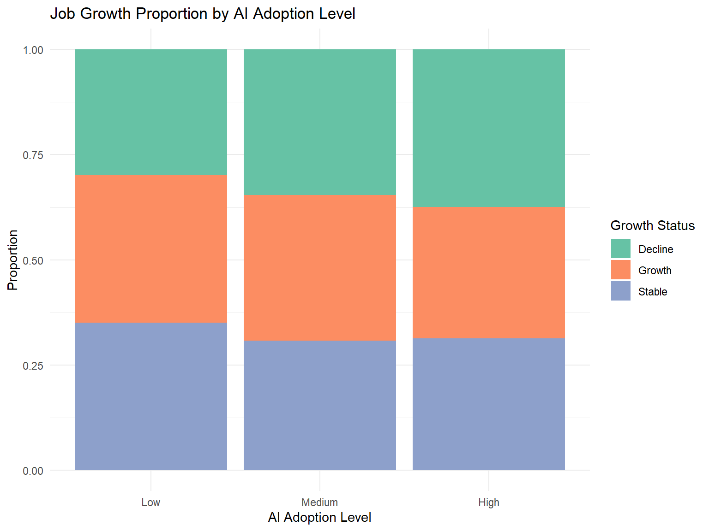
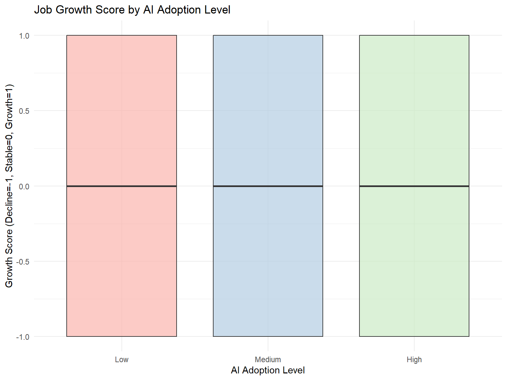
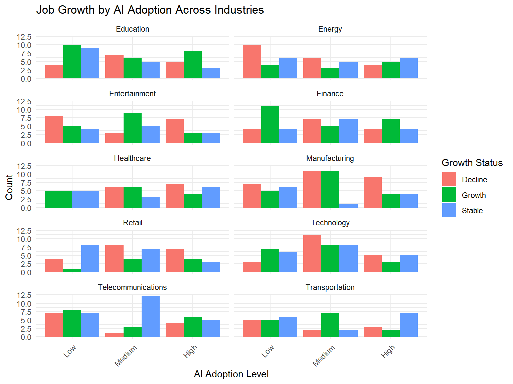

library(tidyverse)
library(ggthemes)
library(knitr)
library(MASS)AI Job Market Analysis Code
Introduction
This report analyzes the relationship between AI adoption levels and job growth projections across industries, using data from the ai_job_market_insights.csv dataset. The analysis includes descriptive statistics, visualizations, and statistical tests to explore trends and patterns.
Setup
Load required R libraries for data manipulation, visualization, and statistical analysis.
1. Data Preparation
Load and clean the dataset, creating a processed dataset with factored AI adoption levels and a numeric growth score.
# Load and clean data
df <- read_csv("ai_job_market_insights.csv")
ro1_data <- df %>%
filter(!is.na(AI_Adoption_Level), !is.na(Job_Growth_Projection)) %>%
mutate(
AI_Adoption = factor(AI_Adoption_Level,
levels = c("Low", "Medium", "High"),
ordered = TRUE),
Growth_Score = case_when(
Job_Growth_Projection == "Decline" ~ -1,
Job_Growth_Projection == "Stable" ~ 0,
Job_Growth_Projection == "Growth" ~ 1
)
)2. Descriptive Statistics
Summarize job counts by AI adoption level and job growth projection.
desc_stats <- ro1_data %>%
count(AI_Adoption, Job_Growth_Projection) %>%
pivot_wider(names_from = Job_Growth_Projection, values_from = n)
kable(desc_stats, caption = "Job Counts by AI Adoption Level")| AI_Adoption | Decline | Growth | Stable |
|---|---|---|---|
| Low | 52 | 61 | 61 |
| Medium | 62 | 62 | 55 |
| High | 55 | 46 | 46 |
3. Visualizations
Growth Proportion Plot
Visualize the proportion of job growth statuses by AI adoption level.
ggplot(ro1_data, aes(x = AI_Adoption, fill = Job_Growth_Projection)) +
geom_bar(position = "fill") +
scale_fill_brewer(palette = "Set2") +
labs(
title = "Job Growth Proportion by AI Adoption Level",
x = "AI Adoption Level",
y = "Proportion",
fill = "Growth Status"
) +
theme_minimal()
Growth Score Boxplot
Display the distribution of growth scores across AI adoption levels.
ggplot(ro1_data, aes(x = AI_Adoption, y = Growth_Score, fill = AI_Adoption)) +
geom_boxplot(alpha = 0.7) +
scale_fill_brewer(palette = "Pastel1") +
labs(
title = "Job Growth Score by AI Adoption Level",
x = "AI Adoption Level",
y = "Growth Score (Decline=-1, Stable=0, Growth=1)"
) +
theme_minimal() +
theme(legend.position = "none")
Industry Facet Plot
Show job growth by AI adoption level across different industries.
ggplot(ro1_data, aes(x = AI_Adoption, fill = Job_Growth_Projection)) +
geom_bar(position = "dodge") +
facet_wrap(~Industry, ncol = 2) +
labs(
title = "Job Growth by AI Adoption Across Industries",
x = "AI Adoption Level",
y = "Count",
fill = "Growth Status"
) +
theme_minimal() +
theme(axis.text.x = element_text(angle = 45, hjust = 1))
4. Statistical Analysis
Chi-Squared Test
Test for association between AI adoption level and job growth projection.
chi_test <- chisq.test(
table(ro1_data$AI_Adoption_Level, ro1_data$Job_Growth_Projection))
print(chi_test)
Pearson's Chi-squared test
data: table(ro1_data$AI_Adoption_Level, ro1_data$Job_Growth_Projection)
X-squared = 2.3761, df = 4, p-value = 0.667Ordinal Regression
Fit an ordinal regression model to predict job growth projection based on AI adoption level (if sufficient data is available).
if (nrow(ro1_data) > 50) {
growth_ordinal <- polr(
factor(Job_Growth_Projection,
levels = c("Decline", "Stable", "Growth")) ~ AI_Adoption,
data = ro1_data,
Hess = TRUE
)
print(summary(growth_ordinal))
} else {
cat("Insufficient data for ordinal regression (n <= 50).\n")
}Call:
polr(formula = factor(Job_Growth_Projection, levels = c("Decline",
"Stable", "Growth")) ~ AI_Adoption, data = ro1_data, Hess = TRUE)
Coefficients:
Value Std. Error t value
AI_Adoption.L -0.17788 0.1454 -1.22311
AI_Adoption.Q -0.01008 0.1406 -0.07167
Intercepts:
Value Std. Error t value
Decline|Stable -0.6656 0.0948 -7.0194
Stable|Growth 0.6821 0.0951 7.1740
Residual Deviance: 1096.917
AIC: 1104.917 5. Key Metrics
Summarize average growth scores by AI adoption level and the proportion of growing jobs by industry and AI adoption.
cat("\nKey Metrics:\n")
Key Metrics:cat("Average growth score by AI level:\n")Average growth score by AI level:ro1_data %>%
group_by(AI_Adoption) %>%
summarise(Mean_Growth = mean(Growth_Score)) %>%
print()# A tibble: 3 × 2
AI_Adoption Mean_Growth
<ord> <dbl>
1 Low 0.0517
2 Medium 0
3 High -0.0612cat("\nIndustry breakdown:\n")
Industry breakdown:ro1_data %>%
group_by(Industry, AI_Adoption) %>%
summarise(Prop_Growth = mean(Growth_Score > 0), .groups = "drop") %>%
arrange(Industry, AI_Adoption) %>%
print(n = Inf)# A tibble: 30 × 3
Industry AI_Adoption Prop_Growth
<chr> <ord> <dbl>
1 Education Low 0.435
2 Education Medium 0.333
3 Education High 0.5
4 Energy Low 0.2
5 Energy Medium 0.214
6 Energy High 0.333
7 Entertainment Low 0.294
8 Entertainment Medium 0.529
9 Entertainment High 0.231
10 Finance Low 0.579
11 Finance Medium 0.263
12 Finance High 0.467
13 Healthcare Low 0.5
14 Healthcare Medium 0.4
15 Healthcare High 0.235
16 Manufacturing Low 0.278
17 Manufacturing Medium 0.478
18 Manufacturing High 0.235
19 Retail Low 0.0769
20 Retail Medium 0.211
21 Retail High 0.286
22 Technology Low 0.438
23 Technology Medium 0.296
24 Technology High 0.231
25 Telecommunications Low 0.364
26 Telecommunications Medium 0.188
27 Telecommunications High 0.4
28 Transportation Low 0.312
29 Transportation Medium 0.636
30 Transportation High 0.167 6. Export Results
Save the processed dataset and visualization outputs.
write_csv(ro1_data, "ro1_processed_data.csv")
ggsave("growth_proportion.png", width = 8, height = 6)
ggsave("growth_score_distribution.png", width = 8, height = 6)Conclusion
The analysis suggests that AI_Adoption (independent variable) has a nuanced but not statistically significant impact on Job_Growth_Projection (dependent variable), with a chi-squared p-value of 0.667 and weak ordinal regression coefficients. Growth scores remain balanced across AI adoption levels (Low: 0.052, Medium: 0, High: -0.061), indicating stable job markets. Industries like Transportation (0.636 at medium AI adoption) and Finance (0.579 at low AI adoption) show promising growth, highlighting opportunities for job expansion in AI-integrated sectors. Further exploration of industry-specific factors could unlock additional growth potential.